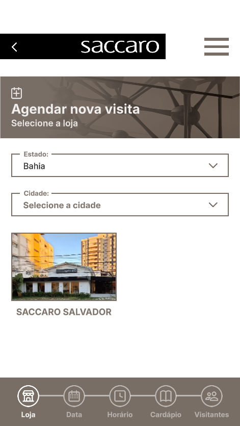
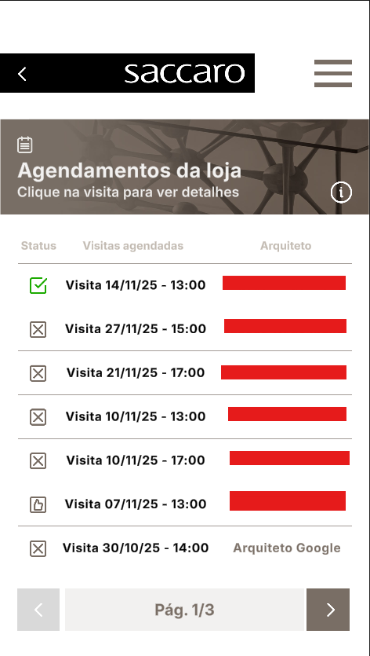
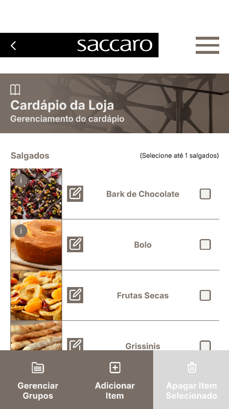

Project Information
Company: Plan XP Marketing Digital Ltda
Client: Saccaro
Platforms: Android
Team Members: Other 2 Unity developers, 1 backend developer,
1 UI/UX artist
My Role: Unity Developer
- Project architecture and workflow design
- UI implementation
- Two-way custom API communication. Fetching data from backend to populate UI and sending HTTP requests to save user changes.

The main goal of this app is to facilitate contact between architects and Saccaro branches while also centralizing important information for the company and its partners.



There are three types of accounts available in the app: architect, salesperson,
and manager.
Architects can schedule visits to a Saccaro Branch near them, salespeople
can see scheduled visits and the store's food menu while managers can see, confirm or
cancel scheduled visits and edit the store's food menu.
Manager account features demonstration. Looking at the calendar of scheduled visits and the store's food menu.
Architect account features demonstration. Scheduling a visit to a Saccaro branch.
Unfortunately, it is not possible to use the app without having an account managed by Saccaro itself. However, you can access the Google Play page for more information about the app and its features: